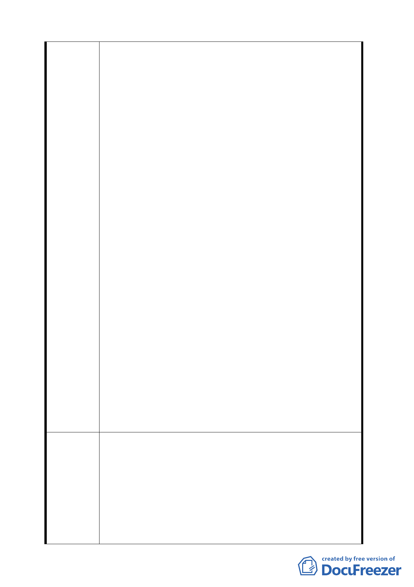

一、依貴府 94 年 6 月 9 日府都規字第 09413545800 號公告內
容所載將不適宜開發之第一類山坡地住宅區朝向回復為
保護區之方式辦理,將本地區內不同條件之土地一致變
為保護區顯有不當,且未明訂任何補償辦法也顯失公平。
二、本人所有土地為北投區秀山段三小段
420.421.422.423.424 地號,雖座落於「住二」地區,但
地勢平坦且面前道路為 10 公尺寬經由稻香路可開車到
達,土地坡度未超過 30%亦非環境敏感地質,貴府本應解
除本人所有土地之開發限制,准予申請建築,但貴府反將
本地區所有土地不管條件如何皆變為保護區,顯然作業
有所疏失,且嚴重損害民眾之權利。
三、貴府在民眾如有獲利時訂定許多回饋金之法令,例如臺北
市建築基地開發許可回饋辦法、臺北市內湖科技園區次
陳情理由
核心產業使用許可回饋辦法、中央法令亦有許多當民眾
受益時繳交回饋金之方法,但當民眾權益受損時卻不訂
定補償辦法,顯然有違反公平原則。
四、本人信賴貴府土地使用分區之編定為住宅區,才購入本土
地,亦是以住宅區之價格購入,當時住宅區之價格即遠高
於附近保護區土地之價格,住宅區建蔽率 30%容積率
60%,但保護區建蔽率 5%最高三樓即是容積 15%,可建容
積相差四倍,目前住宅區之市場價格也遠高於保護區,價
差也大約四倍,貴府若將住宅區變為保護區將降低我等
土地出售時之成交價格,會嚴重損害民眾權益。
五、由貴府所定 94 年度公告現值目前本區住二土地公告現值
為 7500 元/平方公尺,但相鄰保護區公告現值僅有 2200
元/平方公尺,相差 3.14 倍,經查陽明山其他地區住宅區
之市價及公告現值都遠高於保護區,由此可知貴府任意
變更將造成我等民眾大受損失。
一、貴府應再度詳細檢討每塊基地之條件,作為變更都市計畫
之基礎,將部分土地已面臨道路且地勢平坦准許單獨開
發,不宜將每一條件不同之土地全部變更為保護區。
建 議 辦 法 二、貴府應依信賴保護原則將變更為保護區造成民眾權益損
害之土地,給予適當補償,例如比照住宅區與保護區市價
(或公告現值)之差額給予現金補償,或比照大稻埕歷史
風貌特定專用區容積移轉作業要點,給予容積移轉之權
利。
六